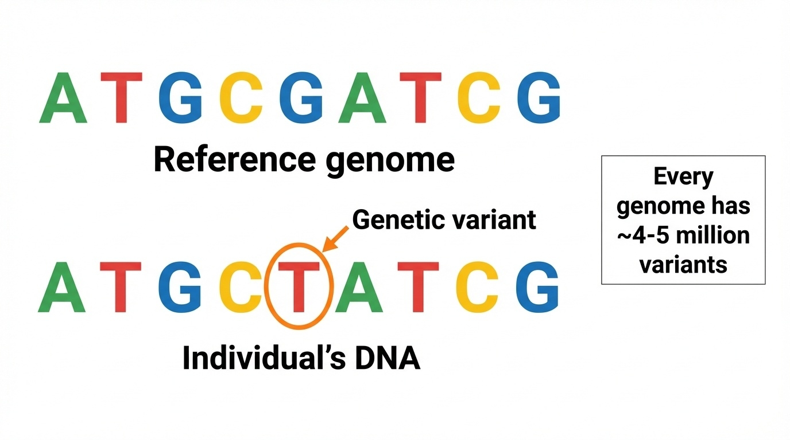
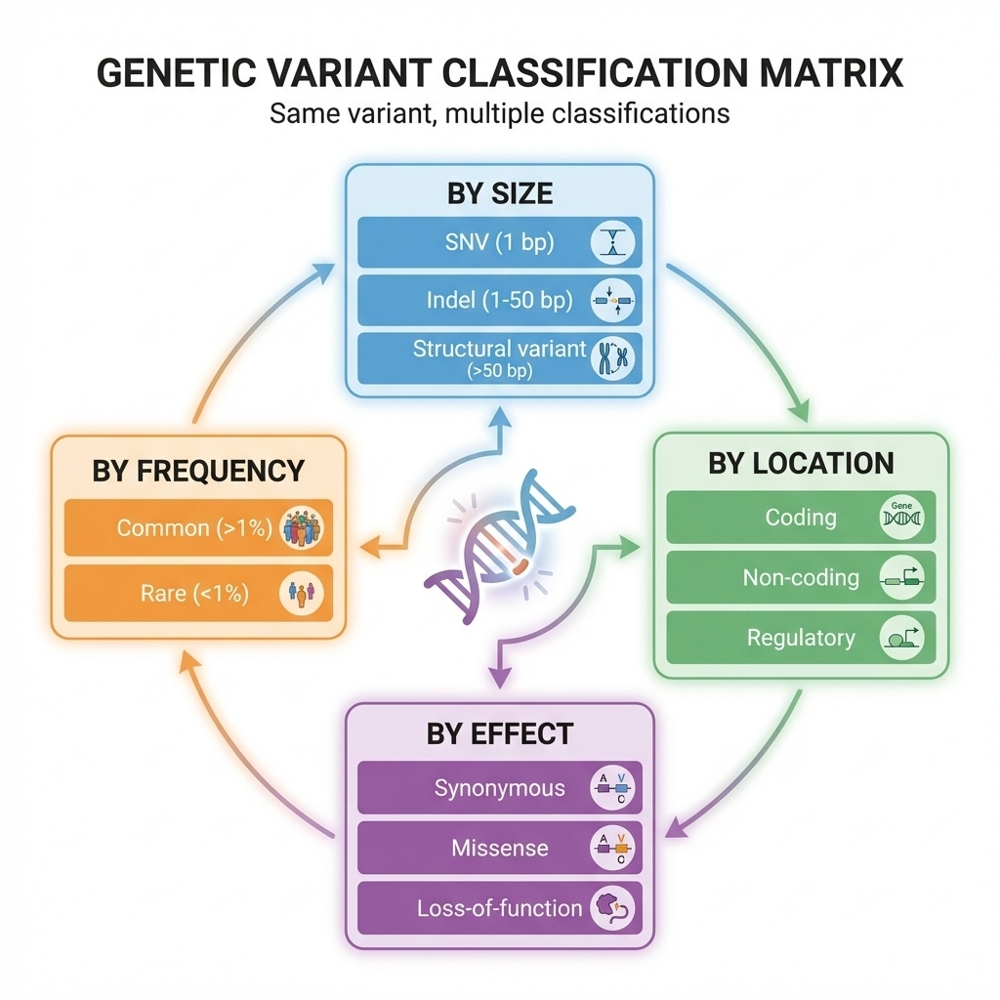
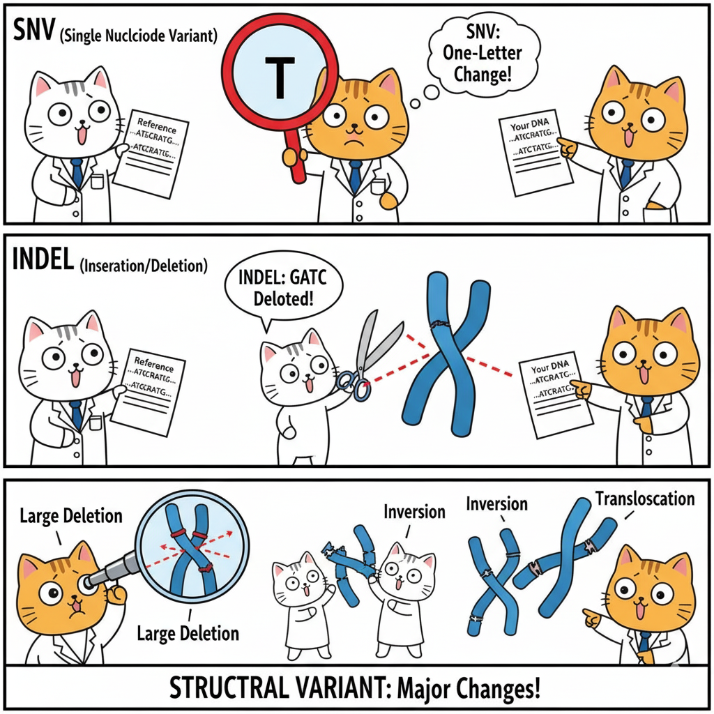
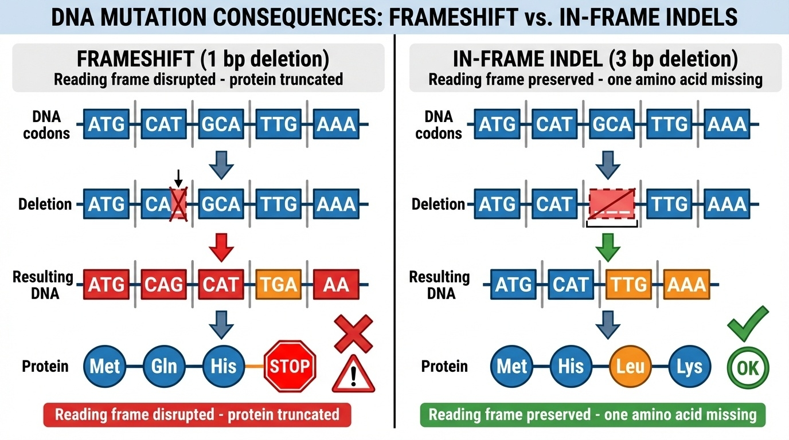
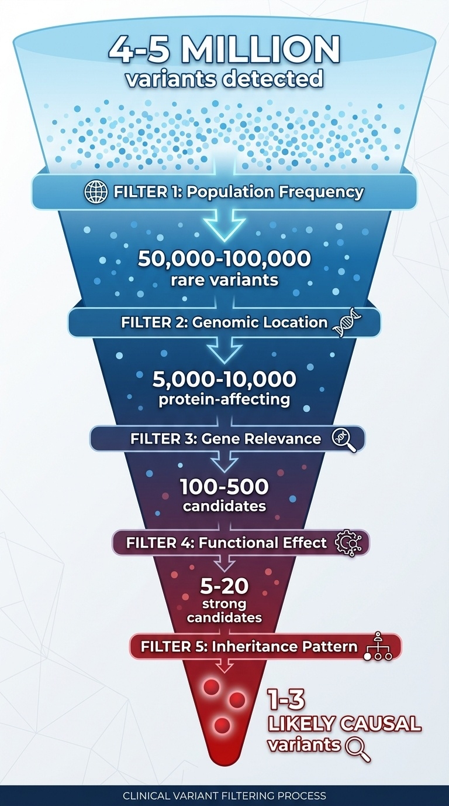

BSMS205 · Genetics
Genetic
Chapter 8 · Part II · Variation
Welcome to Chapter eight, and to Part Two of this course. Part One was about the human genome — the reference, how we built it, how we annotate it. Part Two is about variation — the differences. Today we ask the foundational question: what is a genetic variant? In Chapter seven we learned how to annotate millions of variants using databases like gnomAD and ClinVar. But what kinds of variants are there? How do they differ from each other? And why do some matter and most do not? That is the road map for the next sixty minutes.
A question to start with
How is your DNAmine ?
Here is the question I want you to hold today. You and I share roughly ninety-nine point nine percent of our DNA. But we are not identical. Where exactly are the differences? How big are they? What do they do? When Mendel crossed purple and white pea plants, he saw a difference but had no molecular handle on it. We do. The difference is a change in DNA sequence — a genetic variant. The whole field of human genetics now rotates around understanding what those variants are and what they mean.
Where we left off · where we go now
Chapter 7
How we annotate variants
gnomAD · ClinVar · pLI
Frequency & pathogenicity tags
Chapter 8
What kinds of variants exist
Size · location · effect · frequency
From millions to one
Quick bridge from last week. Chapter seven was about annotation — given a variant, how do we look it up, score it, classify it using public databases like gnomAD and ClinVar. We learned tools, not types. Today we step back and ask: what are the actual categories of variant we are annotating? A single nucleotide change is very different from a one-megabase deletion. A synonymous variant in an exon is very different from a stop-gain. Chapter eight is the taxonomy chapter. By the end you will be able to look at any variant and place it on a four-axis grid: size, location, effect, frequency.
The reality of one human genome
4–5,000,000
variants per person · vs the reference
One change every 600–800 bases
~500,000 indels
~1,000–2,000 structural variants
Here is the headline number. When we sequence your genome, we don't get one neat string of letters — we get four to five million differences from the reference genome. That is one variant roughly every six to eight hundred bases. On top of those single-base changes, you carry about five hundred thousand small insertions and deletions, and one to two thousand large structural variants. This is not pathology. This is normal. Every healthy human carries millions of variants. The job of clinical genetics is to find the one or two — out of those millions — that actually cause a problem.
Roadmap for today
What is a variant? · terminology
The classification framework · four axes
Variants by size · SNV · indel · SV
Variants by effect · the coding five
Non-coding variants · the harder 98%
From millions to one · the filtering funnel
Summary · what comes next
Here is how today will move. First, we nail down terminology — variant, mutation, polymorphism, S N P. People mix these up; you should not. Second, the classification framework — the four axes by which any variant can be described. Third, we walk through size, from single-base changes up to megabase rearrangements. Fourth, the coding consequences — the five flavors of protein change. Fifth, non-coding variants, which are harder and less understood. Sixth, we walk the filtering funnel that takes you from four million variants to one or two causal ones. Then we wrap up. Let's begin.
§ 1
What Is
Section one. The definition. Sounds trivial, but the words we use here matter — and they are used inconsistently across textbooks, papers, and clinics. Let's get it right.
The definition
A genetic variant is a difference in DNA sequencereference .
Reference = an agreed-upon standard sequence
Variant = any deviation from it
Could be 1 base · could be 1 megabase
The textbook definition. A genetic variant is a difference in DNA sequence between an individual's genome and the reference genome. Two parts to that definition. First, you need a reference — an agreed standard sequence, currently G R C h thirty-eight or T two T C H M thirteen. Second, anything that deviates from that reference, in any way, at any size, is a variant. One base change is a variant. A million-base deletion is also a variant. The word does not commit to size, location, or effect. It is the most neutral term we have.
One base, one variant — visualized

Figure 1. Reference vs individual genome. A single G→T change at one position is one variant. Every human carries 4–5 million such differences.
Here is the picture. Top row, the reference genome — the standard. Bottom row, your DNA. At one position, the reference has a G, your DNA has a T. That single-letter difference is one variant. Now multiply that picture by four to five million, and you have one human genome. Most of those variants are inherited from your parents. A handful are new — what we call de novo variants — and they arose during sperm or egg formation. We will return to where variants come from in chapter nine. For today, just hold the image: variant equals deviation from reference.
Variant · mutation · polymorphism · SNP
Term Meaning Connotation
Variant Any DNA difference Neutral — default Mutation DNA change, often rare Implies disease Polymorphism Common variant (>1%) Usually benign SNP Single Nucleotide Polymorphism "snip" · common, single base
Now the terminology table. These four words get used interchangeably in the literature, which is a mess. Here is the practical guide. Variant — the neutral default. Always safe. Mutation — DNA change, with an implicit hint that it is rare or disease-causing. Polymorphism — a common variant, by convention more than one percent allele frequency in the population, usually benign. S N P, pronounced "snip" — a single nucleotide polymorphism, which is just a common single-base variant. In modern genetics we mostly say variant and let the frequency tag tell us if it is rare or common.
Examples — same word, different meaning
"CFTR mutation" · rare disease change · cystic fibrosis"ABO polymorphism" · common blood-type variation"Novel variant" · newly seen · significance unknown"SNP rs334" · the sickle-cell variant in HBB
In this course we say variant by default.
Four worked examples. When you read "C F T R mutation" in a paper, the writer means a rare, disease-causing change in the cystic fibrosis gene. When you read "A B O polymorphism," the writer means common variation underlying blood types — totally benign. "Novel variant" — newly observed, no one knows yet what it does. And "S N P r s three three four" — that is the actual database identifier for the sickle-cell variant in the H B B gene, a single-base change that is also disease-causing despite being called a polymorphism. The terms are slippery. In this course we default to variant.
§ 2
Four Axes
Section two. Now that we have the definition, how do we organize the four million variants in your genome into something tractable? The answer is a four-axis classification framework. Every variant can be described by all four axes simultaneously.
Four perspectives on one variant

Figure 2. Every variant lives on four axes: by size , by location , by effect , by frequency . The same variant can be described by all four at once.
Here is the framework picture. Four axes. Size — is it one base, ten bases, ten thousand bases? Location — is it in a coding region, a regulatory region, deep in an intron? Effect — does it change a protein, break splicing, alter expression? Frequency — is it common in the population or rare? The same variant can be described from all four perspectives at once. A single variant might be: small in size, coding in location, missense in effect, and rare in frequency. That four-tuple is its full classification.
The four axes — at a glance
Axis Categories Why it matters
Size SNV · indel · SV Drives detection method Location Coding · regulatory · intronic Drives interpretability Effect LoF · missense · synonymous Drives pathogenicity Frequency Common · rare Drives clinical filtering
Here is the same framework as a table. Size determines which sequencing technology can even see the variant — short reads are great for single bases, terrible for large rearrangements. Location determines whether we can interpret the variant at all — coding variants are easier than non-coding by a wide margin. Effect predicts pathogenicity — a stop-gain in a critical gene is much more likely to cause disease than a synonymous change. Frequency is the first filter in clinical practice — anything common is unlikely to cause severe disease, because natural selection would have removed it. Four axes, four jobs.
Worked example
One variant · four labels
Size: 1 base — SNVLocation: coding exon of HBBEffect: missense (Glu→Val)Frequency: common in West Africa, rare globally
That is the sickle-cell variant · rs334.
Worked example to make this concrete. Take the most famous variant in human genetics — the sickle-cell variant. By size, it is a single nucleotide variant, an S N V — one base. By location, it sits in a coding exon of the H B B gene, the beta-globin gene. By effect, it is a missense — it changes glutamate to valine at amino acid position six. By frequency, it is common in West African populations because of malaria resistance, but rare globally. One variant, four descriptors. This is how variant interpretation works in practice — you tag every axis, then synthesize.
§ 3
Variants
Section three. We start with size — the most concrete axis. Variants come in three size classes that differ by orders of magnitude, and each class needs different technology to detect.
Three size classes

Figure 3. SNVs (1 bp), indels (1–50 bp), structural variants (>50 bp). Three size classes spanning six orders of magnitude.
Here is the size axis in one picture. At the smallest scale, S N Vs — single nucleotide variants, exactly one base. In the middle, indels — small insertions or deletions, typically one to fifty bases. At the largest scale, structural variants — fifty bases up to whole-chromosome events. The same biological process — DNA damage and repair — produces all three, but the consequences and the detection methods differ enormously. We will walk through each class.
SNVs · single base changes
Reference: ...ATGCGATCG...
Your DNA: ...ATGCT ATCG...
↑
G→T
~4–5 million per genome
One every 600–800 bases
The "bread and butter" of variant calling
Easiest to detect with WGS or WES
S N Vs. Single nucleotide variants. One base differs from the reference. In the example, the reference has a G, your D N A has a T. That is it — a one-character change. There are about four to five million of these in every healthy human genome, roughly one every six to eight hundred bases. They are the easiest variants to detect — both whole-genome and whole-exome sequencing handle them well. Most of what gets called when you run a variant caller is S N Vs. They are the bread and butter of genomics.
Indels · insertions and deletions
Reference: ...ATGCGATCG...
Deletion: ...ATG---TCG... (CGA deleted, 3 bp)
Insertion: ...ATGCAAAGATCG... (AAA inserted, 3 bp)
Typically 1–50 bp
~400,000–500,000 per genome
Slightly harder to call than SNVs
Especially tricky in repetitive regions
Indels. Short for insertions and deletions. A deletion removes some bases — in the example, three bases C G A are gone. An insertion adds bases — three A's are stuck in. The size range is one to about fifty bases, and you have around four hundred to five hundred thousand indels in your genome. They are slightly harder to call than S N Vs, especially in repetitive regions where the variant caller cannot tell exactly where the indel starts and ends. We will see in a moment that the most important property of an indel — for protein consequences — is whether its length is divisible by three.
Structural variants · the big stuff
>50 bp · often >1 kb Deletions — can remove whole genesDuplications — extra copiesInversions — segment flippedTranslocations — moved between chromosomesCNVs — copy number variation
Structural variants. Anything larger than fifty bases, often larger than a kilobase, sometimes spanning entire chromosomes. Five flavors. Deletions remove a chunk — and if that chunk includes a gene, you have effectively knocked out that gene. Duplications add an extra copy of a region. Inversions flip a segment around. Translocations move a segment to a different chromosome — these are famously involved in cancers like C M L. And copy number variants, C N Vs, are deletions or duplications of medium-to-large size. Each type has its own clinical signature.
SVs are rare in count, huge in impact
Only ~1,500 events
But affect more total bases than all SNVs combined
One large deletion = millions of changed bases
Here is the surprising statistic. A typical human genome has only about one thousand to two thousand structural variants — much fewer than the four to five million S N Vs. But because each S V can span thousands or millions of bases, the total amount of D N A affected by S Vs is actually larger than the total affected by all S N Vs combined. So in terms of raw genomic real estate, S Vs dominate. They are also disproportionately important in disease — a single S V can knock out an entire gene at once.
Detection — different sizes need different tech
Technology SNV Indel SV
Short-read WGS (Illumina) Excellent Good Limited Short-read WES Excellent (in exons) Good (in exons) Very poor Long-read WGS (PacBio/Nanopore) Good Excellent Excellent
Detection summary. Short-read sequencing — Illumina, the workhorse — is excellent for S N Vs, good for small indels, and surprisingly poor for structural variants because short reads cannot span large rearrangements. Whole-exome sequencing is even worse for S Vs because the capture process requires intact D N A across the targeted region. Long-read sequencing — PacBio or Nanopore — is the new champion for structural variants, because a single read can be tens of thousands of bases long and span the breakpoints. If you suspect a structural cause and short-read sequencing is negative, long-read is your next move.
§ 4
Coding
Section four. Now we turn to effect — specifically, what happens when a variant lands in the protein-coding portion of a gene. There are five main types of coding variant, and the differences between them drive most of clinical genetics.
The 98 / 2 rule
2%
coding · interpretable
Most known disease variants live in the 2% .
Before we walk the five coding types, one orientation slide. Only about two percent of the human genome is protein-coding. The other ninety-eight percent is non-coding — regulatory, repetitive, intronic. But here is the asymmetry: the vast majority of known disease-causing variants sit in that two percent. Why? Because coding variants change a protein in a way we can predict — change amino acid X to amino acid Y. Non-coding variants change gene regulation in ways that are subtle, tissue-specific, and much harder to read. So we focus on coding first because we understand it best.
The genetic code reads in 3-base codons
DNA: ATG CAT GCA TTG AAA
↓ ↓ ↓ ↓ ↓
Protein: Met His Ala Leu Lys
Each codon = 3 bases = 1 amino acid
The code is redundant — many codons per amino acid
Reading frame matters · shift it and everything changes
Quick refresher on the genetic code, because every coding variant type depends on it. D N A is read in three-base units called codons. Each codon specifies one amino acid. The first codon, A T G, is methionine — the start codon. C A T is histidine, G C A is alanine, and so on. The code is redundant — there are sixty-four possible codons but only twenty amino acids, so multiple codons code for the same amino acid. That redundancy is why some variants change a base but not the protein. And because the code is read in three-base units, anything that disrupts the reading frame scrambles everything downstream. Hold those two facts.
The five coding variant types
Type DNA change Protein effect Pathogenicity
Synonymous GAA→GAG Glu→Glu (same) Usually benign Missense GAA→GC A Glu→Ala Variable Nonsense CAG→T AG Gln→STOP Almost always harmful Frameshift 1 or 2 bp indel Scrambled downstream Almost always harmful In-frame indel 3, 6, 9 bp ±1 amino acid Variable
The five coding types in one table. Synonymous — the D N A changes but the amino acid does not, thanks to codon redundancy. Usually benign. Missense — the D N A changes and the amino acid changes too. Effect depends on which amino acid replaces which. Nonsense — the change introduces a premature stop codon, truncating the protein. Almost always harmful. Frameshift — a one or two base indel shifts the reading frame and scrambles every codon downstream. Almost always harmful. In-frame indel — three, six, or nine bases inserted or deleted, adding or removing whole amino acids while preserving the frame. Variable. Memorize this table — we walk through each type next.
Synonymous · the silent ones
Reference: GAA → Glu (glutamate)
Variant: GAG → Glu (glutamate) — same amino acid
~25% of coding changes
Codon redundancy makes them silent at the protein level
Usually benign
But — can affect splicing or translation efficiency
Synonymous variants. The D N A changes — G A A becomes G A G — but both codons code for the same amino acid, glutamate. So the protein is identical. About a quarter of all coding changes are synonymous, thanks to the redundancy of the genetic code. The default assumption is that these are benign. But — and this is a recent discovery — synonymous variants can still matter. They can disrupt splicing if they sit near an exon boundary. They can change translation efficiency by altering codon usage. So while ninety-five percent of synonymous variants are benign, a small minority do cause disease. Modern variant interpretation does not give them a free pass anymore.
Missense · the gray zone
Reference: GAA → Glu (glutamate, charged)
Variant: GC A → Ala (alanine, hydrophobic)
One amino acid → a different one
Effect depends on which AA, where in protein
Conservative (similar AAs) → often benignRadical (charged ↔ hydrophobic) → often harmfulMost VUS are missense
Missense variants. The D N A changes and the amino acid changes too. In the example, glutamate — a negatively charged amino acid — becomes alanine, which is small and hydrophobic. That is a radical change in chemistry, and it might break the protein. But missense effects are notoriously hard to predict. A conservative substitution — say, leucine for isoleucine, both small and hydrophobic — usually does nothing. A radical substitution at a critical site can be devastating. Location in the protein matters too — a change in the active site is much more serious than in a loop. This is why most variants of uncertain significance, the dreaded V U S, are missense variants.
Nonsense · the truncators
Reference: CAG → Gln (glutamine)
Variant: T AG → STOP
Premature stop codon → truncated protein
Often degraded by nonsense-mediated decay (NMD)
Effectively a knockout of one allele
Almost always pathogenic
Nonsense variants. Sometimes called stop-gain. The D N A change converts a normal codon into a stop codon. C A G, glutamine, becomes T A G, stop. The ribosome stops translating early, and you get a truncated protein. Usually that truncated m R N A is recognized as defective and destroyed by a quality control system called nonsense-mediated decay, or N M D. So in practice, a nonsense variant in the early part of a gene functions as a knockout — that allele produces no protein. Nonsense variants are almost always pathogenic when they occur in essential genes. They are the cleanest signal in clinical genetics.
Frameshift vs in-frame · the divisible-by-3 rule

Figure 4. Left: 1-bp deletion shifts the reading frame — wrong amino acids and an early stop. Right: 3-bp deletion preserves the frame — one amino acid removed, the rest intact.
Here is the most important figure in the chapter. The difference between frameshift and in-frame indels comes down to one question: is the indel length divisible by three? On the left, a one-base deletion. The reading frame shifts. From the deletion onward, every codon is misread, you get random wrong amino acids, and usually within a hundred or so bases you hit a premature stop. Result: truncated, non-functional protein. On the right, a three-base deletion. The reading frame is preserved. You lose exactly one amino acid, and every other codon downstream reads correctly. Result: a slightly shorter but mostly functional protein. The single property — divisible by three or not — determines whether the variant is catastrophic or mild.
Frameshift example · 1 bp deletion
Normal: ATG | CAT | GCA | TTG | AAA
Met - His - Ala - Leu - Lys
Frameshift: ATG | CA_ | GCA | TTG | AAA ← 1 bp deleted
re-read as: ATG | CAG | CAT | TGA | AA...
Met - Gln - His - STOP
Wrong amino acids from the deletion onward
Usually a premature stop within ~100 bp
Functionally a knockout
Walking through the frameshift example slowly. The normal D N A is read as A T G, C A T, G C A, T T G, A A A — methionine, histidine, alanine, leucine, lysine. Now delete one base from the second codon. The reading frame slides over. The same letters are now grouped differently — A T G, C A G, C A T, T G A — and T G A is a stop codon. So instead of histidine-alanine-leucine-lysine, you get glutamine-histidine-stop. Wrong amino acids, and an early stop. The protein is truncated, often subjected to nonsense-mediated decay, and that allele is functionally a knockout. Almost always pathogenic.
In-frame example · 3 bp deletion
Normal: ATG | CAT | GCA | TTG | AAA
Met - His - Ala - Leu - Lys
In-frame: ATG | CAT | ___ | TTG | AAA ← 3 bp deleted
ATG | CAT | TTG | AAA
Met - His - Leu - Lys ← one AA missing
Frame preserved · downstream reads correctly
Just one amino acid removed
Often partially functional
Example: EGFR in-frame del → hyperactive in lung cancer
And here is the in-frame case. Same starting sequence, but now we delete three bases — the entire alanine codon G C A. The reading frame is preserved. You get methionine, histidine, leucine, lysine — the alanine is just gone, but everything else is intact. The protein is one amino acid shorter, but all the other amino acids are still there in the right places. Usually this is partially functional, sometimes fully functional, sometimes harmful — depends on which amino acid was removed and where. A famous clinical example: in-frame deletions in the E G F R gene make the receptor constitutively active, driving certain lung cancers. So in-frame is not always benign — but it is mechanistically different from frameshift.
LoF · the disease-aligned shorthand
Loss of Function (LoF) =
All produce no functional protein from that allele
Subject to nonsense-mediated decay
The strongest single signal for pathogenicity
Combined with high pLI → very strong evidence
One umbrella term to know. Loss of function, abbreviated L O F. This is the clinical shorthand for any variant that effectively knocks out a gene copy. It includes nonsense variants, frameshift indels, canonical splice site disruptions — which we will cover in a moment — and large deletions that remove the gene. All of these produce no functional protein from that allele. Many are subject to nonsense-mediated decay. L O F is the single strongest predictor of pathogenicity we have. When you combine an L O F variant with a high p L I score from gnomAD — meaning the gene is intolerant to L O F — you have very strong evidence that this variant is causing disease.
§ 5
The Other
Section five. We have covered the protein-coding two percent. Now the hard part — the other ninety-eight percent. Non-coding variants are more numerous, more diverse, and harder to interpret. This is the active research frontier of human genetics.
Splice site variants · breaking the cut
Genes contain introns (cut out) and exons (kept)
Splice donor: GT · acceptor: AG
Canonical splice variants (GT→AT, AG→AA) → splicing failsResult: exon skipped or intron retained
Counted as LoF · example: BRCA2 splice → breast cancer
Splice site variants. Genes are not continuous — they are interrupted by introns that get cut out by the spliceosome. The boundaries are marked by very specific sequences: G T at the donor end, A G at the acceptor end. These are called the canonical splice sites. If a variant changes the G T to A T, or the A G to A A, splicing usually fails catastrophically. The exon gets skipped, or the intron gets retained, or the spliceosome uses a wrong cryptic site. The result is a broken protein. We count canonical splice variants as loss of function. A famous clinical example: B R C A two splice site mutations cause hereditary breast cancer.
Regulatory variants · changing expression
Element Where Effect
Promoter Near gene start Transcription initiation Enhancer Up to 100+ kb away Boosts expression 5' UTR Before start codon Translation efficiency 3' UTR After stop codon mRNA stability, miRNA
Regulatory variants. These do not change protein sequence — they change when, where, and how much a gene is expressed. Four main flavors. Promoter variants — near the start of the gene, affecting transcription initiation. Enhancer variants — sometimes hundreds of kilobases away, looping back to the gene to boost expression. Five-prime U T R variants — before the start codon, affecting how efficiently ribosomes translate. Three-prime U T R variants — after the stop codon, affecting m R N A stability and microRNA binding. All four can cause disease, but the effects are usually subtle and tissue-specific.
Why non-coding is harder
Indirect · effect on expression, not proteinTissue-specific · matters in liver, not brainContext-dependent · only in certain conditionsDistance · enhancers can be 100 kb from targetSparse databases · most untested clinically
Why is non-coding so much harder than coding? Five reasons stacked. First, indirect — instead of a direct amino acid change, you get a change in expression level, which is harder to quantify. Second, tissue-specific — a regulatory variant might matter only in liver and do nothing in brain. Third, context-dependent — it might matter only during stress, or development, or a specific cell state. Fourth, distance — an enhancer might be a hundred kilobases from the gene it regulates, so just locating the affected gene is non-trivial. Fifth, databases like ClinVar are dominated by coding variants, so non-coding ones often have no prior reports to compare against. This is why most clinical pipelines still focus on coding variants first.
§ 6
From Millions
Section six. The clinical question. You have just sequenced a patient. Four to five million variants come back. The patient has a disease. Which one of those four million variants is causing it? You need a systematic filter. Here is the funnel.
The clinical filtering funnel

Figure 5. Sequential filters take you from ~4–5 million variants to 1–3 likely causal variants. Each filter removes orders of magnitude.
The filtering funnel. Start at the top with four to five million detected variants. Apply five sequential filters. Each one removes one or two orders of magnitude. By the bottom you have one to three candidate variants that plausibly explain the patient's disease. This funnel is the core workflow of clinical genomics — and every step uses concepts we have already covered. Frequency from chapter seven, location and effect from today, inheritance from chapter nine. Let's walk the steps.
Five filters · five orders of magnitude
Step Filter Surviving
0 All detected variants ~4–5 M 1 Frequency < 1% (rare) ~50–100 k 2 Coding + canonical splice ~5–10 k 3 Phenotype-relevant gene ~100–500 4 LoF or pathogenic missense ~5–20 5 Inheritance + family data 1–3
Five filters in numbers. Start, four to five million. Filter one — remove anything common, defined as more than one percent allele frequency in gnomAD. That alone takes you down to fifty to one hundred thousand rare variants. Filter two — keep only coding variants and canonical splice variants. Down to five to ten thousand. Filter three — keep only variants in genes that match the patient's phenotype. Down to a few hundred. Filter four — keep only loss-of-function variants and pathogenic-looking missense. Down to twenty or fewer. Filter five — apply inheritance pattern and family data. Down to one to three causal candidates. That is the workflow.
Worked case · the KMT2D variant
Patient: child with developmental delayFilter 1 (freq): absent in gnomAD ✓Filter 2 (effect): nonsense in KMT2D ✓ (LoF)Filter 3 (gene): KMT2D = Kabuki syndrome, pLI = 1.0 ✓Filter 4 (inheritance): de novo, AD pattern ✓Conclusion: pathogenic · explains phenotype
A real case to make the funnel concrete. Child presents with developmental delay. Whole-exome sequencing finds a novel variant in K M T two D. Apply the filters. Filter one — frequency. Absent from gnomAD's one hundred forty thousand individuals. Rare, check. Filter two — effect. It is a nonsense variant, creating a premature stop. Loss of function, check. Filter three — gene. K M T two D is the Kabuki syndrome gene, and its p L I score is one point zero, meaning it is extremely intolerant to loss of function. Phenotype matches, gene constraint matches, check. Filter four — inheritance. Variant is de novo, not present in either parent, and Kabuki is autosomal dominant. Check. Conclusion: pathogenic. This variant explains the patient's phenotype. Five filters, definitive answer.
Pathogenic · uncertain · benign
Class Hallmarks
Pathogenic LoF in disease gene · rare · high pLI · segregates · de novo VUS Missense · moderate freq · conflicting predictions · novel Benign Common (>1%) · synonymous · seen in healthy
How variant interpretation reports are written, in three buckets. Pathogenic — strong evidence the variant causes disease. Loss of function in a disease gene, rare in population, high p L I, segregates in the family, often de novo. Variant of uncertain significance, V U S — the gray zone. Usually missense, moderate frequency, computational predictions disagree, no prior reports. The V U S class is huge in modern reports and frustrating for clinicians. Benign — strong evidence against pathogenicity. Common in the population, synonymous in non-splice region, seen in healthy individuals. The A C M G has formal guidelines for assigning these labels, but at its core it follows what we have just walked through.
WES vs WGS · what can you see?
Variant type WES WGS
Coding SNVs / indels Yes Yes Canonical splice Yes Yes Deep intronic No Yes Promoter / enhancer No Yes Structural variants Poor Limited (better with long reads)
Start with WES for Mendelian. Escalate to WGS if negative.
Connecting variant type to sequencing strategy. Whole-exome sequencing — W E S — sees coding S N Vs and indels and canonical splice variants. It misses deep intronic variants, regulatory variants, and most structural variants. Whole-genome sequencing — W G S — sees all of those, plus the regulatory regions. It still struggles with structural variants unless you use long reads. Clinical decision rule. For a suspected Mendelian disease, start with W E S — it is cheaper and ninety percent of known disease variants are coding. If W E S comes back negative, escalate to W G S, possibly long-read, to look for non-coding or structural causes. That escalation pathway is becoming standard in academic medical centers.
§ 7
Summary
Let's pull the threads of chapter eight together.
What to take away
Variant = any difference from the reference · ~4–5 M per genome
Four axes: size · location · effect · frequency
Sizes: SNV · indel · SV — different tech for each
Coding 5: synonymous · missense · nonsense · frameshift · in-frame
The ÷ 3 rule : frameshift vs in-frame
From millions to one : frequency → location → gene → effect → inheritance
Six things to take away. One — a variant is any deviation from the reference, and you carry roughly four to five million of them. Two — every variant lives on four axes: size, location, effect, frequency. Three — by size, S N V, indel, and structural variant, with different detection technologies for each. Four — five coding consequences: synonymous, missense, nonsense, frameshift, in-frame. Five — the divisible-by-three rule: a one-base indel scrambles everything, a three-base indel is mild. Six — clinical interpretation is a five-stage funnel from millions to one or two causal candidates. Hold those six points; they organize everything else in the chapter.
Next lecture
Where do these variantscome from ?
Chapter 9 · Transmission of Genetic Variants
One question to leave you with. We now know what variants are and how to classify them. But where do they come from? Some you inherit from your mother, some from your father, and a small handful arose new in you — de novo. How does that work mechanistically? How do variants get passed on across generations? And what makes some genes accumulate more variants than others? That is chapter nine — transmission of genetic variants. See you next time.